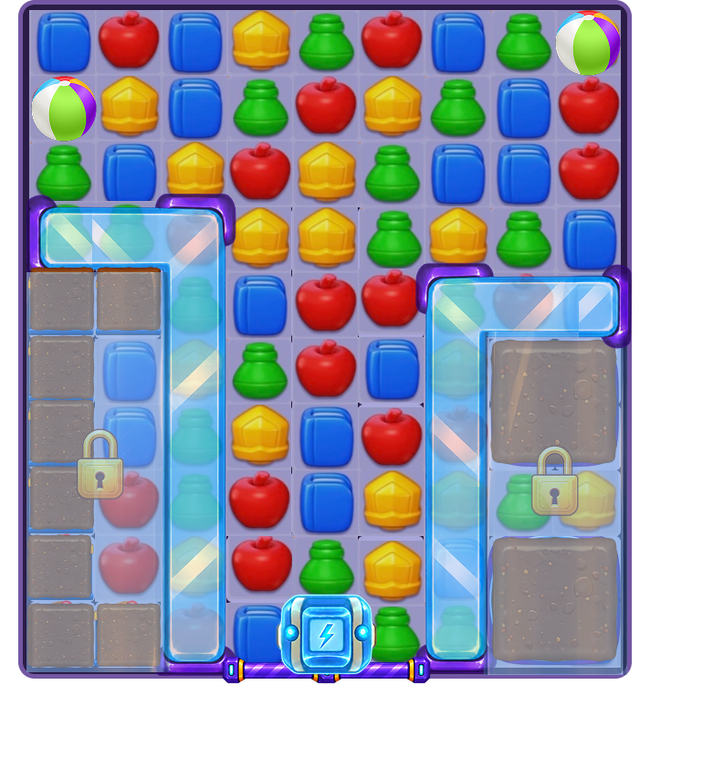
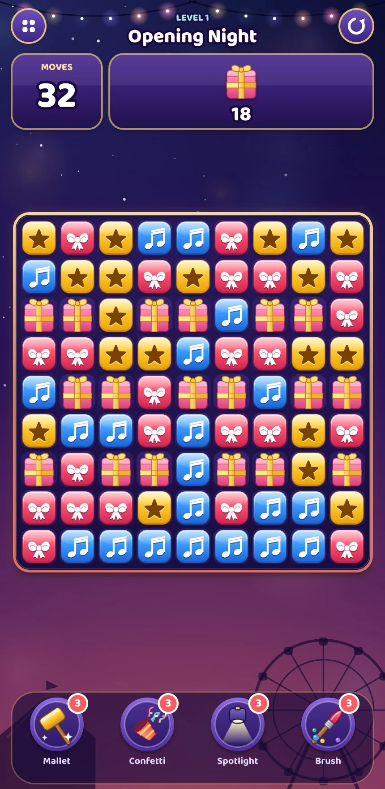
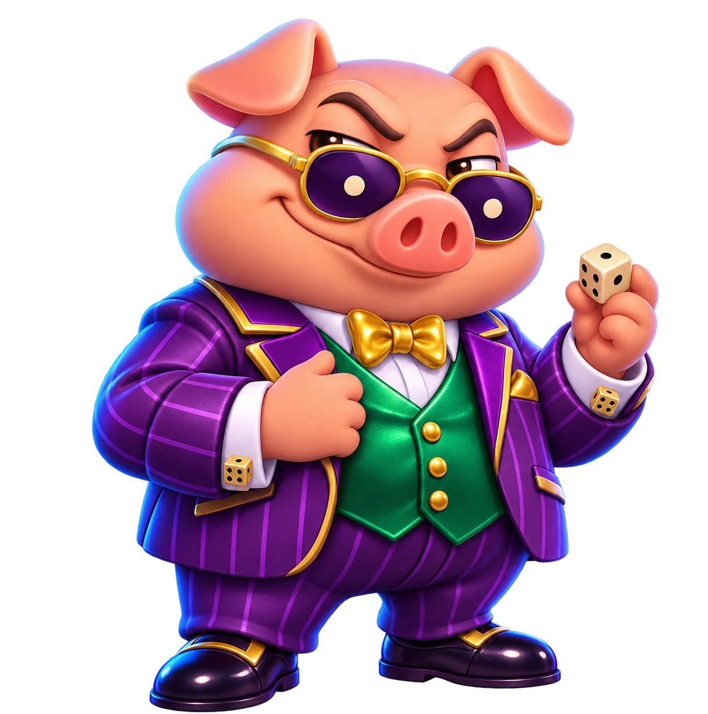

Game Product & Design Portfolio
A closer look
at the next move.
I'm Seda. I turn close playthroughs into mechanic proposals, level designs and questions worth testing.


Details make the difference.
Three approaches to puzzle designPuzzle games · Player decisions · Product thinking01 — 03
Selected work
Different questions. Clear design decisions.

Original concept · Prototype captures01System design · Game concept & progression
Boom & Bloom
A small blast. A bigger decision.
A festival-themed puzzle concept built around Power-Up Charge: fire a special now, or invest nearby taps to make it stronger.
Benchmark analysis50-level planPrototype demo
Read the case study ↗02Mechanic design · Five-level study
Linked Gates
Closing a gate can be the right move.
A reversible gate mechanic and five board studies exploring access, timing and a shared power-up economy.
New mechanic5 level rolesProgression analysis
Read the case study ↗
Snake Eyes · Character concept03Analysis into design · Mechanic & tutorial
Snake Eyes
Sometimes, one more hit can wait.
A 100-level structural review translated into a deterministic dice mechanic and a guided tutorial.
100-level analysisVillain designTutorial design
Read the case study ↗How I approach a game
The interesting part
is why a move matters.
I look beyond the obstacle list to understand how space, timing and progression change the player's choices.
01 / ObservePlay with a question.
Track introductions, board changes and moments of friction. Keep what happened separate from how it felt.
02 / DesignGive the player a choice.
Define the decision before the visual theme. Explore alternatives and explain why one interaction is worth keeping.
03 / ValidateMake the next test clear.
Specify rules and edge cases, demonstrate the idea, and identify what player testing would need to establish.
A little about me
Hi, I'm Seda.
I'm an Industrial Engineering student at Istanbul Technical University, interested in mobile games, product and player experience.
These case studies bring together the parts of game product work I enjoy: investigating systems, finding an opportunity and turning it into a design that can be explained and tested. I'm looking for opportunities to keep doing that with a game team.
More about my background ↗